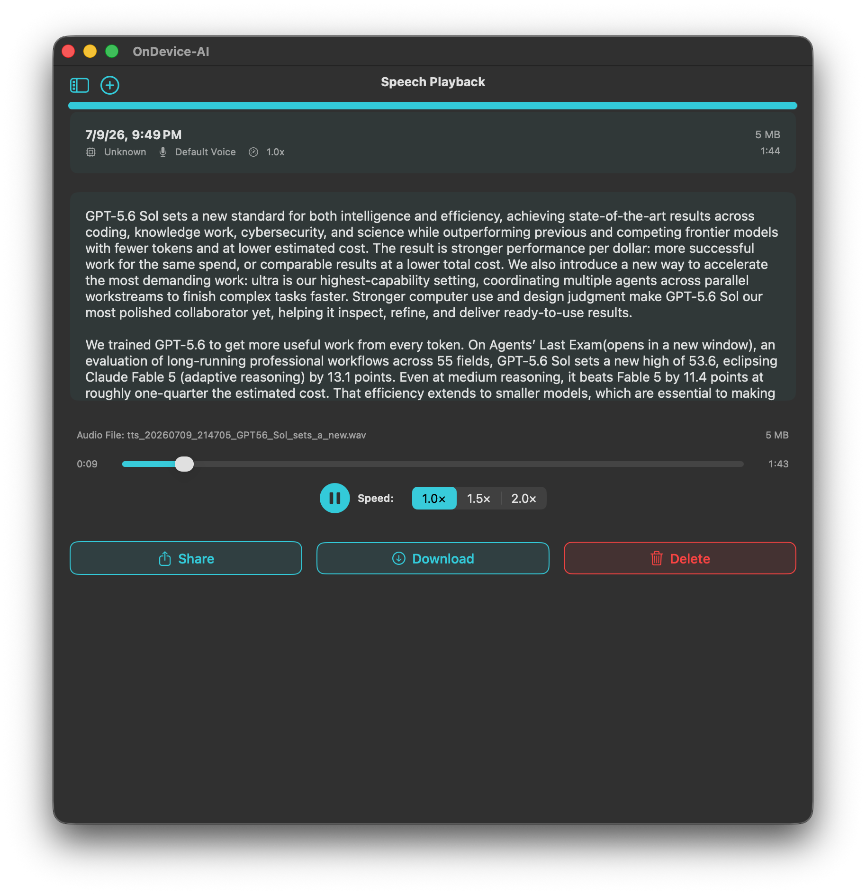

Give recurring work a shorter path
Some tasks are simple but frequent: capture an idea before it disappears, reopen a planning conversation, turn a recording into text, or listen to a draft while walking. Shortcuts are useful because they put those actions where you already work, whether that is Siri, the Shortcuts app, or an automation you have made for yourself. Every action runs through the app on iPhone, iPad, and Mac, so transcription and speech can stay on-device and offline when you pick a local model.
Four useful starting points
- Create a Text Note with a title, content, and destination library.
- Open a saved conversation, Knowledge Library, or library document.
- Pass an audio file to On Device AI and get the transcript back.
- Send text to speech, then play it or save the audio file when that suits the task.
Start with one action you already repeat. A shortcut only earns its place when it removes a real step.

Use Siri to get back to the right work
Saved conversations and libraries are useful precisely because they are worth returning to. Add an open action to a personal shortcut when you want quick access to the project you use most. It is a small change, but it avoids starting from a blank chat when the work already has a history.
Keep the automation personal
Shortcuts are yours to arrange. Make a capture shortcut for a morning walk, a transcription shortcut for interviews, or a speech shortcut for long reading. Choose local models for private processing on iPhone, iPad, and Mac. If a shortcut uses a connected provider, consider the information that will be sent there.
Frequently asked questions
Do On Device AI Shortcuts work with Siri?
Yes. On Device AI actions are available in Siri and the Shortcuts app on iPhone, iPad, and Mac. You can trigger them by voice or through automations.
Does transcription via Shortcuts run offline?
When you select a local model, transcription runs entirely on-device and works without an internet connection.
Can a Shortcut save the generated speech as a file?
Yes. The text-to-speech action can play the audio immediately or save it as a file for later use, depending on how you configure the shortcut.